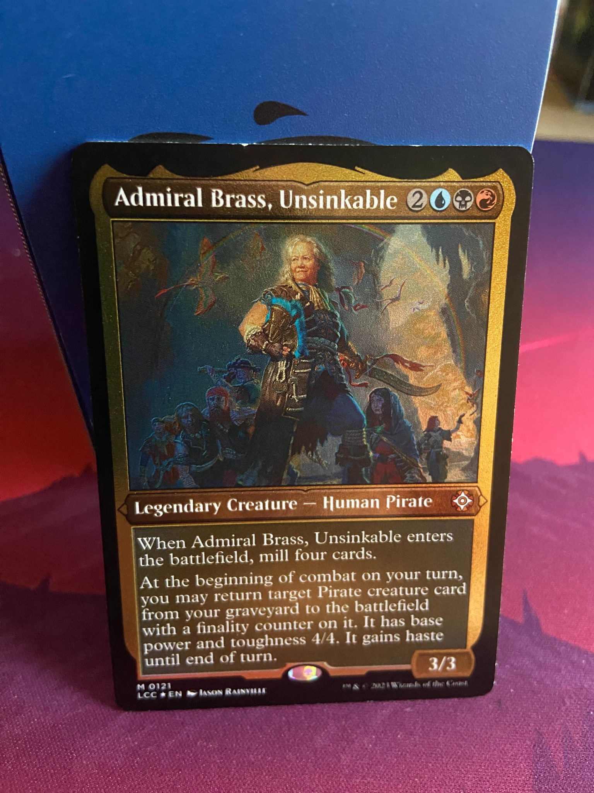
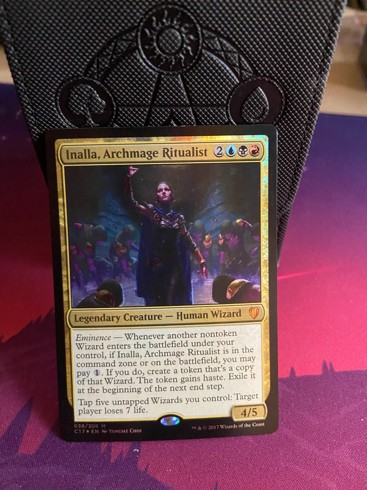

Commander is a unique Magic the Gathering format where each deck is built around a legendary creature—the Commander. In this 100-card singleton format (aside from basic lands), your Commander defines your strategy.
This site is dedicated to my passion for Commander. I spend epic Friday and Saturday nights playing with my mom, her friend, my girlfriend, and my two best friends. Our games can get heated and we sometimes play for hours!
My Personal Epic Commander Full Collection. Each deck is 100 cards.
My Story
My journey into Commander began as a personal quest to leave behind video games and embrace a hobby that would boost my social life. In December of 2024, I made the decision to stop video gaming and swap it for in-person card and board games. This change wasn’t just about shifting hobbies—it was a deliberate move to promote socialization and to embark on new adventures with real people around me. Although I may return to video games someday, at this time in my life, I simply can’t afford them, so I channel my passion into Commander and live for the thrill of each match.
Through this project, I aim to showcase not only my favorite decks and epic game moments but also the camaraderie and thrill that comes from each match. Whether it is the dramatic plays, unexpected twists, or just the fun banter, every game tells a story. Welcome to my world of Commander, where every card has a tale and every duel is an adventure.
About - Who We Are
I am a dedicated Magic the Gathering player who balances school assignments during the week with intense weekend games. My passion for Commander is fueled by strategy, creativity, and friendship.
My gaming group includes my mom, her boyfriend, my girlfriend, and my two best friends. We mix friendly rivalry with shared fun to make every session memorable.
Every game night is more than just cards, it's a full-on experience. We rotate who cooks, and everyone contributes to the feast. Bobby loves deep-frying eggrolls, my mom throws down with her legendary chicken wings and mac and cheese, and my girlfriend and I tag-team beef and noodles. My other friends? Pizza delivery pros. It's less a game night and more a celebration of food, fun, and friendship.
Disputes? Not here. We've got a built-in solution: an AI model that acts as our official Commander rules judge. If a card interaction gets confusing, I just ask the AI—*beep boop, legal call made!* No arguments, just smooth gameplay and fair calls. It's like having our own personal digital judge at the table.
My gaming group during an intense Commander session (AI used to protect real identities)
AI Prompt: "Create a photorealistic image of a lively Magic the Gathering Commander game night with diverse players around a table drinking milk." (AI used to protect real identities)
Schedule - When We Play
Our Commander battles are scheduled for Friday and Saturday nights. The excitement builds as we gather and draw our opening hands.
Even with a busy week full of assignments, these late-night sessions are worth every minute of preparation.
Nothing beats the anticipation of a weekend Commander session! The clocks show how we lose track of time!
AI Prompt: "Create a cartoonish image illustrating a group of friends playing Commander on Friday and Saturday nights, with a clock in the background"
While our official start times are 7 PM on Fridays and 5 PM on Saturdays, things are always a bit flexible. Sometimes people show up late, or we take time setting up food, music, and good vibes before diving in. No one’s in a rush—we’re here to enjoy the night, not race through it. Even when someone shows up an hour late, they know a seat and a shuffled deck are waiting.
Some of our sessions go deep into the night—our record is playing straight through until 5 AM. Most games end around 1 or 2 in the morning, especially when work or school waits the next day. But when the energy is right and everyone's hyped, we lose track of time completely. Commander has this way of pulling you in, and before you know it, hours have passed in a whirlwind of spells, combos, and laughter. We try to be responsible… but sometimes the game just doesn’t let go.
Our Commander Game Night Schedule
Day
Start Time
End Time
Notes
Friday
7:00 PM
12:00 AM
Late-night chaos and long sessions!
Saturday
5:00 PM
Open-Ended
Earlier start, still wild all night.
Locations - Where We Play
Most of our Commander games happen right in our living room. We push the couches aside, pull out our best playmats, and set up a table full of decks, dice, snacks, and music. It becomes more than just a room—it turns into our battleground, a safe space where strategy and chaos blend into one unforgettable experience.
Occasionally, we like to change it up by meeting at local game stores or community centers. These spots give us a chance to challenge new players, show off our deck tech, and support our local gaming community. We’re always on the lookout for new places to duel, and we welcome suggestions from anyone who wants to join in!
Our Commander games mix strategy, creativity, and a bit of chaos. The format challenges players to build unique decks around legendary creatures.
Every session is a blend of spell-slinging, board control, and unpredictable turns that make each game a new adventure.
This image captures the setup at the beginning of a typical Commander game. Every player starts with 40 life, which we track using two D20 dice. You also begin the game with 7 cards in hand, drawn from your 100-card Commander deck. Before we start the room gets real quiet and every locks in. Sitting down at a table like this, surrounded by friends, cards, and strategy, you can feel the game coming alive before it even begins.The image below shows an example of what it looks like to sit at the table. Next time you should hide your hand though. Don't wanna expose your plan!!
Typical Gamenight Commander Setup involves a 40 life count with two D20 dice. A hand of 7 cards. A deck of a total of 99+1(commander.) And a playmat.
Learn More
Want to get into the game? These videos helped me and my friends get started:
How to Play Magic: The GatheringHow to Play Commander (EDH Format)
Decks - Showcasing My Commanders
Niv Mizzet, Visionary Deck
This Izzet deck (red and blue) is built around Niv Mizzet. The strategy is to cast spells that deal major damage, and I draw cards equal to the non-combat damage dealt to three opponents.
The deck focuses on spell-slinging and board control, making each play impactful.
Niv Mizzet in action leading a spell-slinging assault
Tinybones, Bauble Burglar
This mono-black deck is focused on forcing opponents to discard their cards, which I then use to my advantage. It runs only swamp lands to produce black mana.
The strategy revolves around resource denial and seizing control of the game.
Tinybones deck using dark swamp imagery for dramatic effect
Giada, Font of Hope
This mono-white deck capitalizes on angelic synergy and healing. Every time an angel is summoned or attacks, it triggers a life-steal effect that keeps me in the game.
An enchantment that serves as a God adds extra protection to my angel army.
Giada deck featuring a radiant army of healing angels
Pirate Deck
This thematic deck revolves around capturing enemies and forcing them to join my pirate crew. Using hostages and disruptive tactics, I create a swashbuckling atmosphere on the battlefield.
It is all about a nautical adventure where every captured foe adds to the crew’s might.

Pirate deck showcasing nautical themes and adventurous gameplay
Lord of the Rings Deck
Inspired by Frodo and Sam, this deck emphasizes hobbit ingenuity and resilience. It focuses on food production, healing, and using magical trees to secure victory.
The theme pays tribute to the warmth and determination of hobbits against overwhelming odds.
Lord of the Rings themed deck with hobbit-inspired strategies
Eldrazi Deck Zulodoch
This deck, sourced from Commander Masters, harnesses the raw power of Eldrazi creatures. Its aim is to overwhelm opponents with colossal threats and unexpected plays.
The decks emphasis on game-changing creatures makes it a formidable force on the battlefield.
A wizard tribal deck that leverages enter-the-battlefield effects to summon powerful wizards. The deck’s ritualistic approach disrupts opponents and swings momentum.
Each wizards arrival on the battlefield brings a surge of spellcasting energy that can turn the tide of the game.

Innalia deck with a mystical wizard tribal theme
Why I Play Commander
I stopped playing video games because I craved real social interaction and wanted to make my last year of college more productive. Commander gave me the perfect opportunity to connect with friends and family through epic battles and clever strategy.
Since shifting away from traditional gaming, I've discovered a richer, more fulfilling lifestyle. I have had more time to spend with loved ones, started blog posting, and even delved into cybersecurity research—ventures that have opened my eyes to a whole new world I wish I had known about earlier.
Every Commander session reminds me that it is never too late to embrace change and grow. The game has brought a sense of community and passion into my life, proving that stepping out of your comfort zone can lead to incredible new friendships and experiences. It’s all good to start now and see where the journey takes you.
The change in life that I have made this year because of this hobby
AI Prompt: "Create a pixel art split-scene showing the contrast between video gaming and card playing. On the left side, depict the negative aspects of excessive gaming: a person alone in a dark, cluttered room with glowing screens, energy drinks, and a tired, slouched posture. The mood is cold and isolating. On the right side, show the positive aspects of playing card games like Magic: The Gathering: a brightly lit room with warm colors, friends gathered around a table, laughing and engaged in gameplay. Include cards, dice, and a cozy atmosphere. Showcase joy, focus, and connection. Make the overall style retro pixel art, with clear emotional contrast between the two sides."
AI Prompt that I used to create the above AI prompt for a better image: "create a prompt to make an image in pixel art showing the sides of gaming and card playing showcase good and bad on the twosides of the images
Activity
Hours per Week
Gaming (4 hours/day)
28 hours
Commander & Gaming (2 nights/week)
8 hours
Time Saved
20 hours
I absolutely love this new balance in my life. Since I stopped playing video games and committed to playing Commander only on two nights a week, I've discovered a whole new world of opportunities. I also gained 20 hours a week! With the extra time, I have been learning new things almost every day—from mastering magic tricks to perfecting my card handling techniques. This change has not only deepened my appreciation for the game but has also allowed me to reconnect with friends and family, start blog posting, and even dive into cybersecurity research. Every session now feels like an adventure, and I’m grateful for the new skills and friendships I’ve gained along the way.
AI Prompts
This section details the AI prompts used during the creation of this page, from generating images and styling to crafting interactive features and storytelling. Below you'll find the prompts we actually used, as well as some experimental ideas explored along the way.
Coding Experimental / Extra Prompts
"Create a unique and creative (non-professional) CSS element inspired by Magic: The Gathering, using the five mana colors: Blue, Red, Green, Black, and White."
"Create a fixated border that adjusts automatically to different image sizes and orientations."
"Make a website feel like a card shop using a CSS color scheme based on Magic: The Gatherings five mana colors."
"Create a base for me to code a table and add css elements to match the page."
"Help me understand and write a JavaScript popup alert that thanks the user for submitting a form on a static site."
"Edit my grammer so that I did not mispell in this paragraph."
"take my prompts from this chat that ive used, correct the grammer and return them to me in a list format."